1.OC 没有tupple返回, swift 有
2.Instantiating Objects
var myDate = NSDate()
swift 没有指针,没有alloc init用()(new)
NSDate *myDate = [[NSDate alloc] init]; OC
3.Calling methods
[myObject method]; 方括号包括整个方法
myObject.method() 点语法必须有参数小括号
4.Calling methods one parameter
[myObject methodWithParameter:123];
myObject.methodWithParameter(123)
5.Calling method with two parameters
[myAVQueuePlayer insertItem:newSong afterItem:currentSong];
myAVQueuePlayer.insertItem(newSong,afterItem:currentSong)
swift第一个形参在外,其他在括号里
6.Initializer methods
OC: [[NSURL alloc] initWithString:@”http://bd.com"];
SW:NSURL(string:”http://bd.com") 没有了initWith,直接类名加括号参数
7.factory methods
OC.没有alloc/init: [NSURL URLWithString:@”http://bd.com"];
SW.不能用NSURL.URLWithString:(“http://bd.com")没有swift版本
还用NSURL(string:”http://bd.com") ,只用init版本,有swift版本
8.using failable initialization will be mapped to optional value
var myURL:NSURL? = NSURL(string:”http://bd.com")
1 | if(myURL != nil) { |
myURL?.lastPathComponent
1 | If let myURL:NSURL = NSURL(string:"http://bd.com"){ |
9.working with properties
OC,可以点语法也可以getter setter
SW,只用点语法
10.readonly properties
Setting must use a regular method
Optional and unwrapped optional(always has a value)
11.id and AnyObject
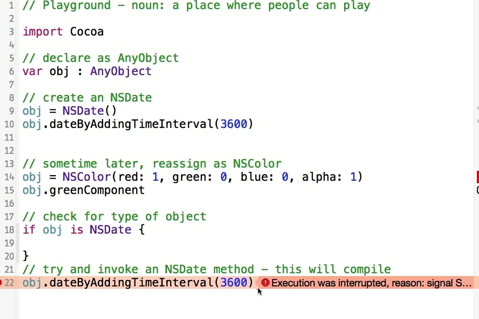
12.working with swift and objectiveC Strings
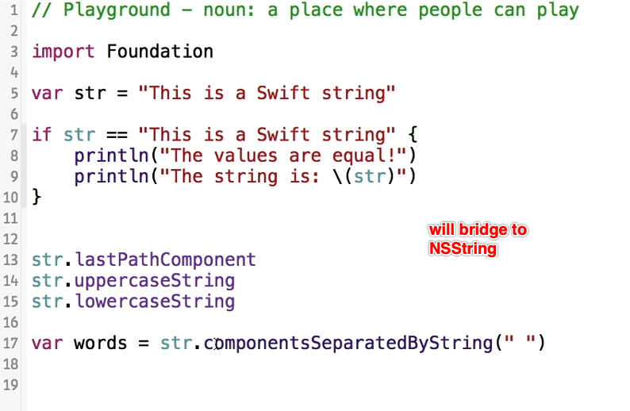
13.more maps NSArray mapped to [AnyObject]
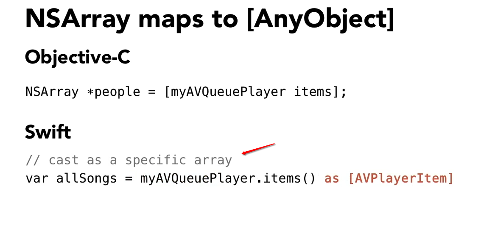
14.Dictionaries mapped to [NSObject : AnyObject]
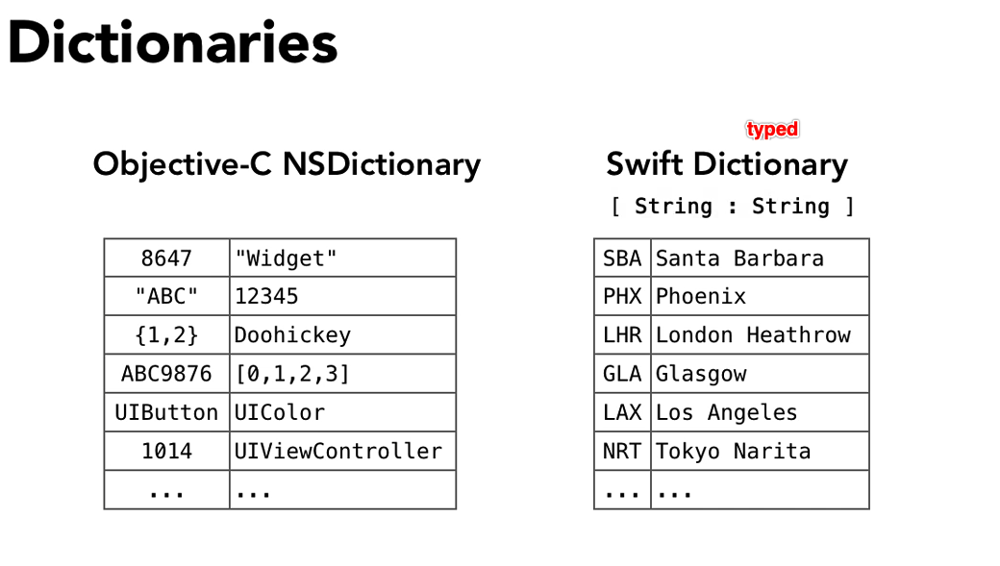
Hash
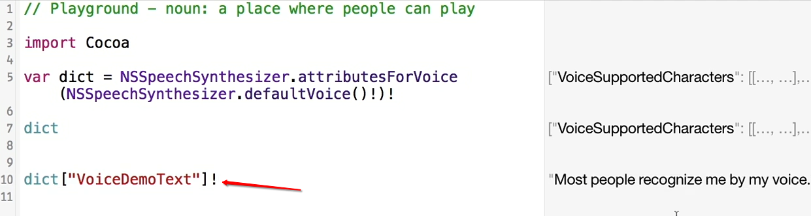
15.NSNumber bridge to Int,Unit,Float
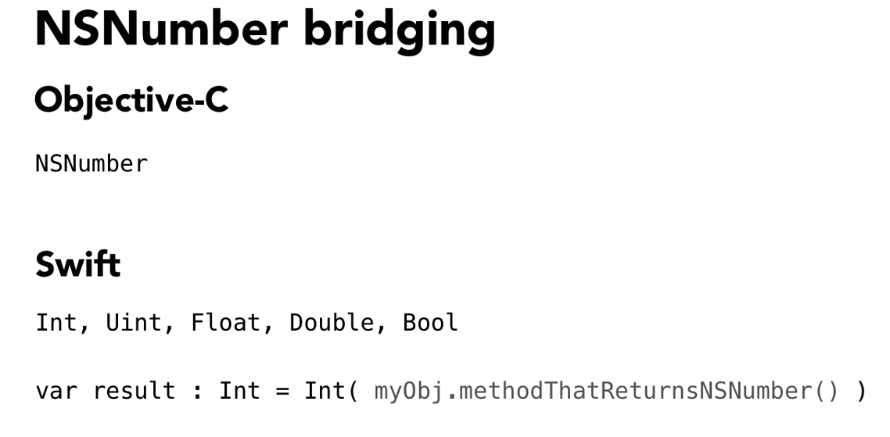
16.Structs
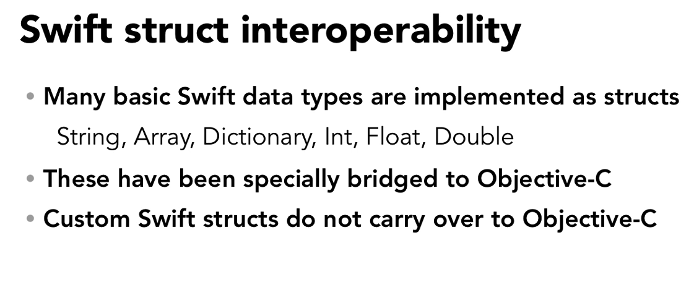
17.working with NSError
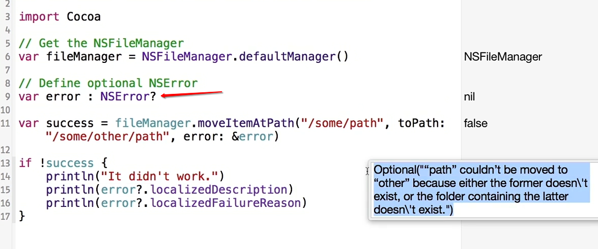
18.adding Swift to OC project
1.create bridge header file
2.import header
19.Use swift class in OC class
1.import project-swift.h in OC file (changed, no such file now,not necessary)
2.let swift class inherit NSObject or add @objc
3.override init
20.limitations of language interoperability
Generics and Tuples | OC doesn’t support
Swift-defined Enumrerations and Stuctures
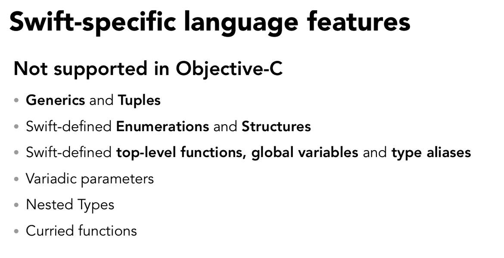
Limitations on dynamic, untyped behavior | Swift doesn’s support
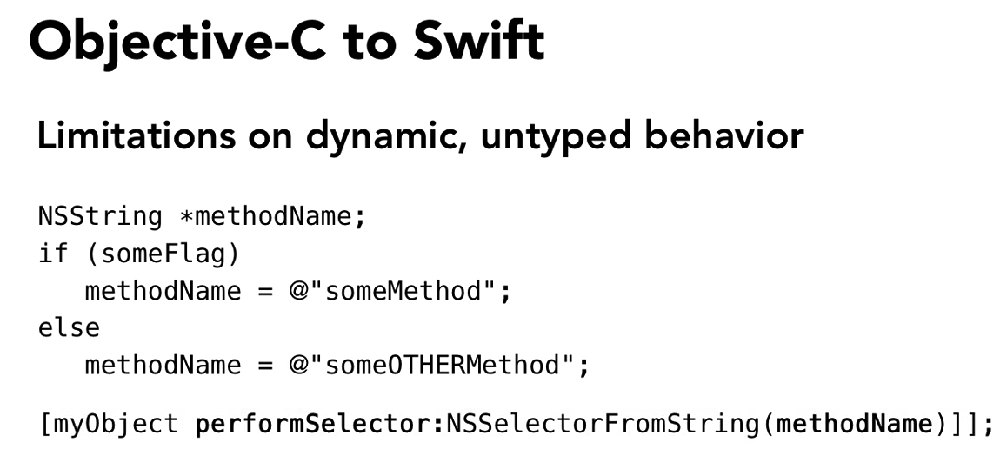
21.Inheriting between languages
Swift can inherit OC Classes
OC can not inherit Swift Classes
22.Migrating Objective-C to Swift manually
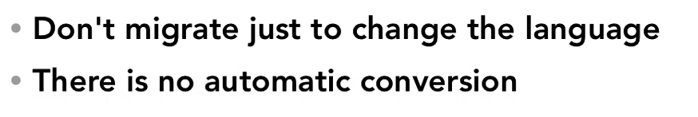
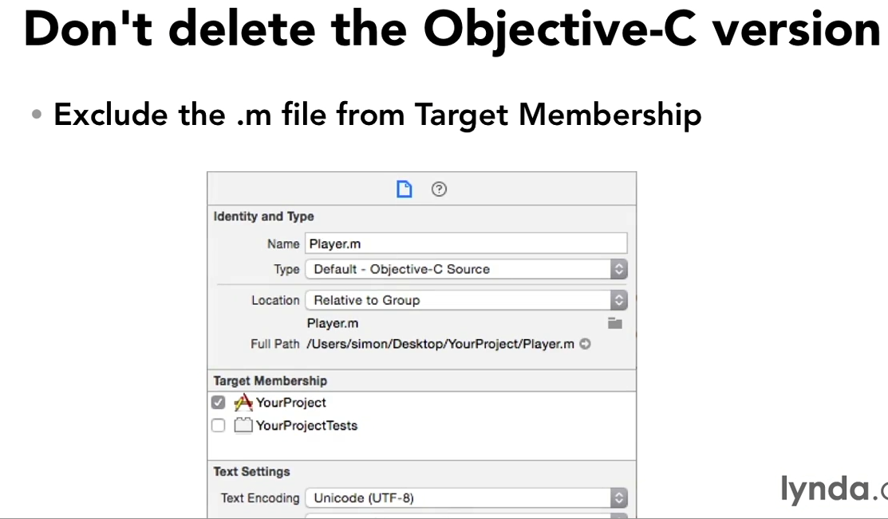